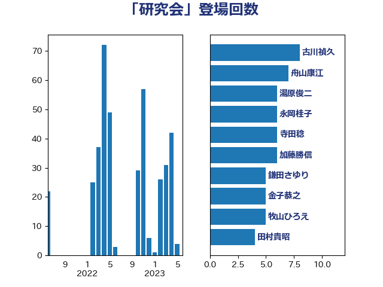

単語「研究会」

| 古川禎久 | 自由民主党 | 8 回 |
| 舟山康江 | 国民民主党 | 7 回 |
| 湯原俊二 | 立憲民主党 | 6 回 |
| 永岡桂子 | 自由民主党 | 6 回 |
| 寺田稔 | 自由民主党 | 6 回 |
| 加藤勝信 | 自由民主党 | 6 回 |
| 鎌田さゆり | 立憲民主党 | 5 回 |
| 金子恭之 | 自由民主党 | 5 回 |
| 牧山ひろえ | 立憲民主党 | 5 回 |
| 田村貴昭 | 日本共産党 | 4 回 |
| 松本剛明 | 自由民主党 | 4 回 |
| 後藤茂之 | 自由民主党 | 4 回 |
| 山添拓 | 日本共産党 | 4 回 |
| 坂本祐之輔 | 立憲民主党 | 4 回 |
| 吉川元 | 立憲民主党 | 4 回 |
| 伊藤岳 | 日本共産党 | 4 回 |
| 齋藤健 | 自由民主党 | 3 回 |
| 高見康裕 | 自由民主党 | 3 回 |
| 野田聖子 | 自由民主党 | 3 回 |
| 谷公一 | 自由民主党 | 3 回 |
| 若宮健嗣 | 自由民主党 | 3 回 |
| 紙智子 | 日本共産党 | 3 回 |
| 石垣のりこ | 立憲民主党 | 3 回 |
| 渡辺周 | 立憲民主党 | 3 回 |
| 沢田良 | 日本維新の会 | 3 回 |
| 梅村みずほ | 日本維新の会 | 3 回 |
| 斉藤鉄夫 | 公明党 | 3 回 |
| 後藤祐一 | 立憲民主党 | 3 回 |
| 川田龍平 | 立憲民主党 | 3 回 |
| 岸田文雄 | 自由民主党 | 3 回 |
| 天畠大輔 | れいわ新選組 | 3 回 |
| 佐藤英道 | 公明党 | 3 回 |
| 伴野豊 | 立憲民主党 | 3 回 |
| 井上哲士 | 日本共産党 | 3 回 |
| 青柳仁士 | 日本維新の会 | 2 回 |
| 野村哲郎 | 自由民主党 | 2 回 |
| 重徳和彦 | 立憲民主党 | 2 回 |
| 秋葉賢也 | 自由民主党 | 2 回 |
| 福島みずほ | 社会民主党 | 2 回 |
| 浜野喜史 | 国民民主党 | 2 回 |
| 河野太郎 | 自由民主党 | 2 回 |
| 水岡俊一 | 立憲民主党 | 2 回 |
| 橘慶一郎 | 自由民主党 | 2 回 |
| 梅村聡 | 日本維新の会 | 2 回 |
| 本村伸子 | 日本共産党 | 2 回 |
| 末松義規 | 立憲民主党 | 2 回 |
| 早稲田ゆき | 立憲民主党 | 2 回 |
| 掘井健智 | 日本維新の会 | 2 回 |
| 小倉將信 | 自由民主党 | 2 回 |
| 宮本岳志 | 日本共産党 | 2 回 |
| 塩崎彰久 | 自由民主党 | 2 回 |
| 倉林明子 | 日本共産党 | 2 回 |
| 中谷真一 | 自由民主党 | 2 回 |
| 中司宏 | 日本維新の会 | 2 回 |
| 上田勇 | 公明党 | 2 回 |
| 高良鉄美 | 無所属 | 1 回 |
| 高木かおり | 日本維新の会 | 1 回 |
| 須藤元気 | 無所属 | 1 回 |
| 長妻昭 | 立憲民主党 | 1 回 |
| 鈴木義弘 | 国民民主党 | 1 回 |
| 金子恵美 | 立憲民主党 | 1 回 |
| 里見隆治 | 公明党 | 1 回 |
| 道下大樹 | 立憲民主党 | 1 回 |
| 逢沢一郎 | 自由民主党 | 1 回 |
| 輿水恵一 | 公明党 | 1 回 |
| 越智隆雄 | 自由民主党 | 1 回 |
| 豊田俊郎 | 自由民主党 | 1 回 |
| 谷田川元 | 立憲民主党 | 1 回 |
| 西田実仁 | 公明党 | 1 回 |
| 西岡秀子 | 国民民主党 | 1 回 |
| 葉梨康弘 | 自由民主党 | 1 回 |
| 萩生田光一 | 自由民主党 | 1 回 |
| 菅家一郎 | 自由民主党 | 1 回 |
| 舩後靖彦 | れいわ新選組 | 1 回 |
| 篠原孝 | 立憲民主党 | 1 回 |
| 笠浩史 | 無所属 | 1 回 |
| 穀田恵二 | 日本共産党 | 1 回 |
| 福重隆浩 | 公明党 | 1 回 |
| 福島伸享 | 無所属 | 1 回 |
| 福岡資麿 | 自由民主党 | 1 回 |
| 福山哲郎 | 立憲民主党 | 1 回 |
| 石井章 | 日本維新の会 | 1 回 |
| 田村まみ | 国民民主党 | 1 回 |
| 浅野哲 | 国民民主党 | 1 回 |
| 森山浩行 | 立憲民主党 | 1 回 |
| 林芳正 | 自由民主党 | 1 回 |
| 東徹 | 日本維新の会 | 1 回 |
| 村田享子 | 立憲民主党 | 1 回 |
| 杉尾秀哉 | 立憲民主党 | 1 回 |
| 打越さく良 | 立憲民主党 | 1 回 |
| 庄子賢一 | 公明党 | 1 回 |
| 平林晃 | 公明党 | 1 回 |
| 平木大作 | 公明党 | 1 回 |
| 工藤彰三 | 自由民主党 | 1 回 |
| 岬麻紀 | 日本維新の会 | 1 回 |
| 山際大志郎 | 自由民主党 | 1 回 |
| 山田勝彦 | 立憲民主党 | 1 回 |
| 山本博司 | 公明党 | 1 回 |
| 尾身朝子 | 自由民主党 | 1 回 |
| 小川淳也 | 立憲民主党 | 1 回 |
| 宮路拓馬 | 自由民主党 | 1 回 |
| 宮本徹 | 日本共産党 | 1 回 |
| 室井邦彦 | 日本維新の会 | 1 回 |
| 堂込麻紀子 | 無所属 | 1 回 |
| 嘉田由紀子 | 無所属 | 1 回 |
| 吉良州司 | 無所属 | 1 回 |
| 吉田とも代 | 日本維新の会 | 1 回 |
| 前川清成 | 日本維新の会 | 1 回 |
| 冨樫博之 | 自由民主党 | 1 回 |
| 伊東信久 | 日本維新の会 | 1 回 |
| 中野洋昌 | 公明党 | 1 回 |
| 中谷一馬 | 立憲民主党 | 1 回 |
| おおつき紅葉 | 立憲民主党 | 1 回 |